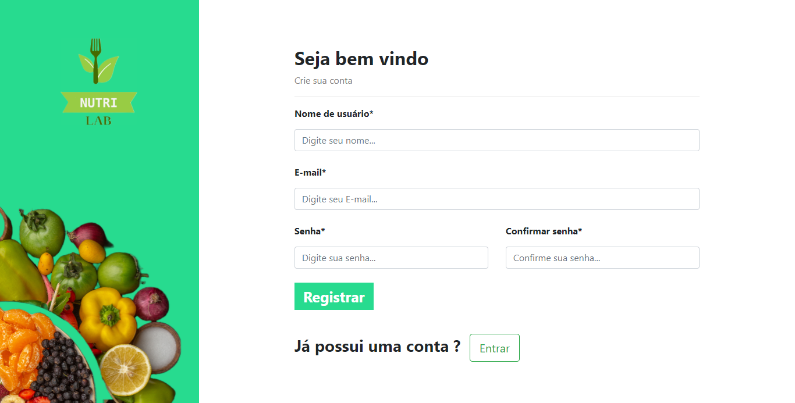
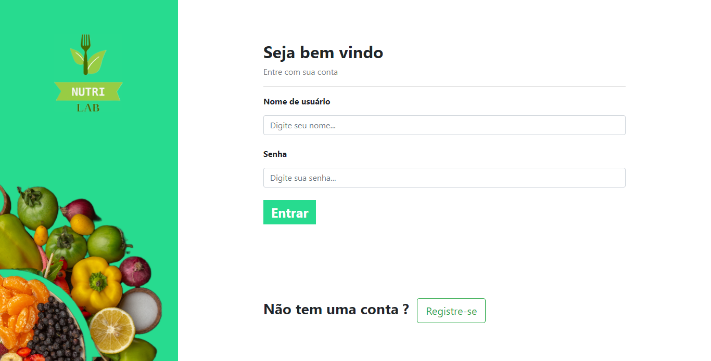
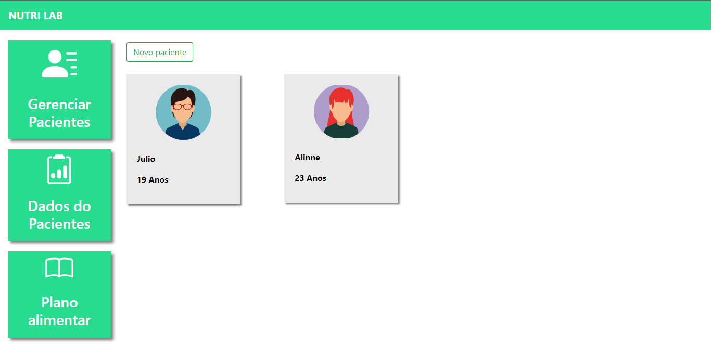
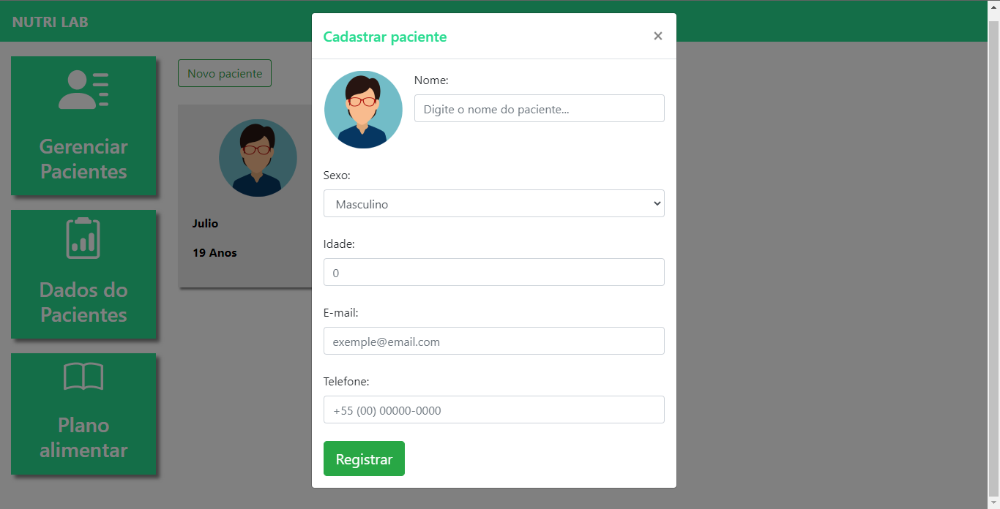
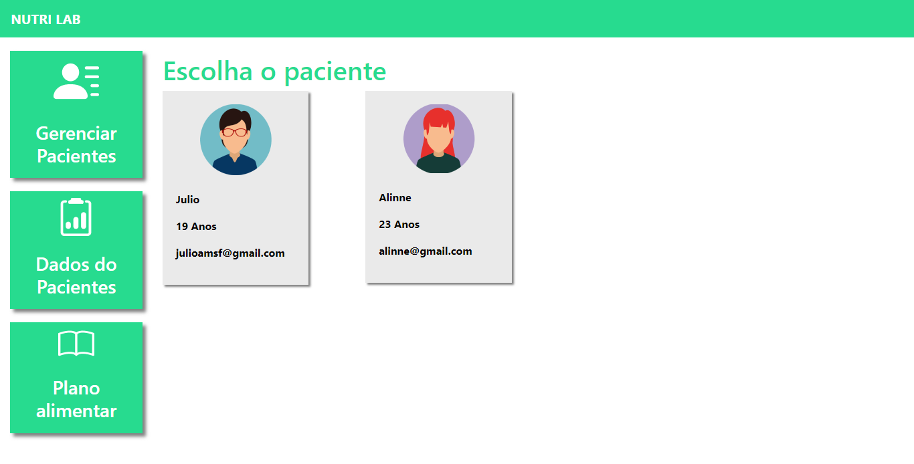
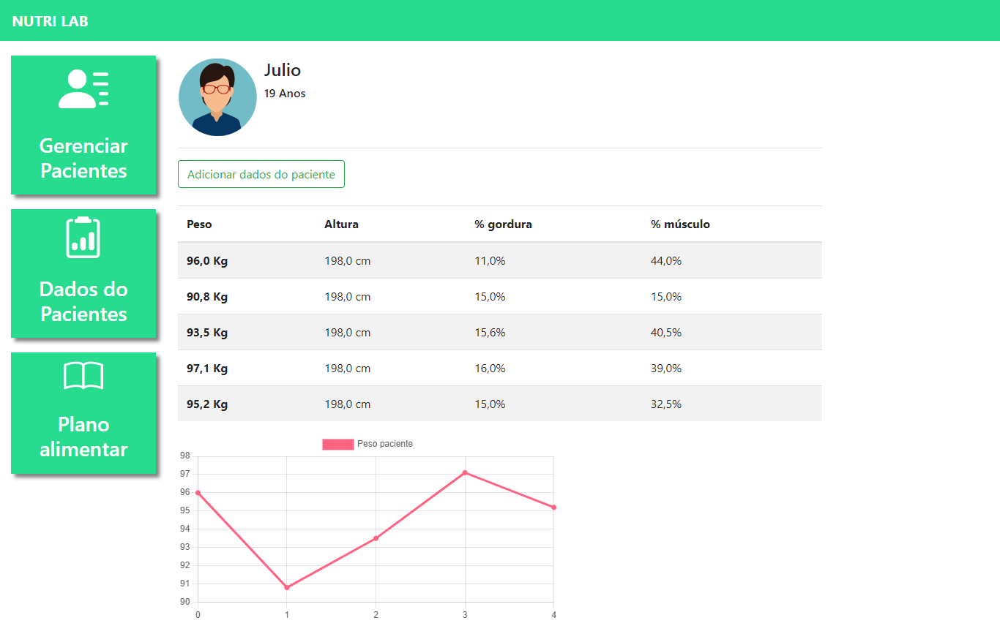
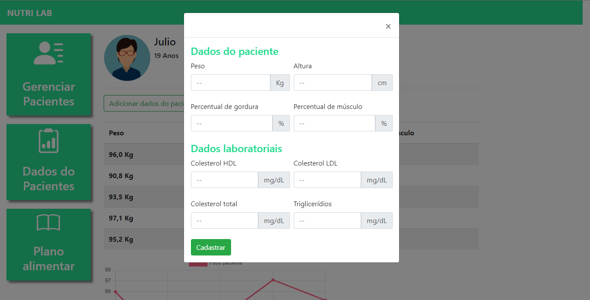
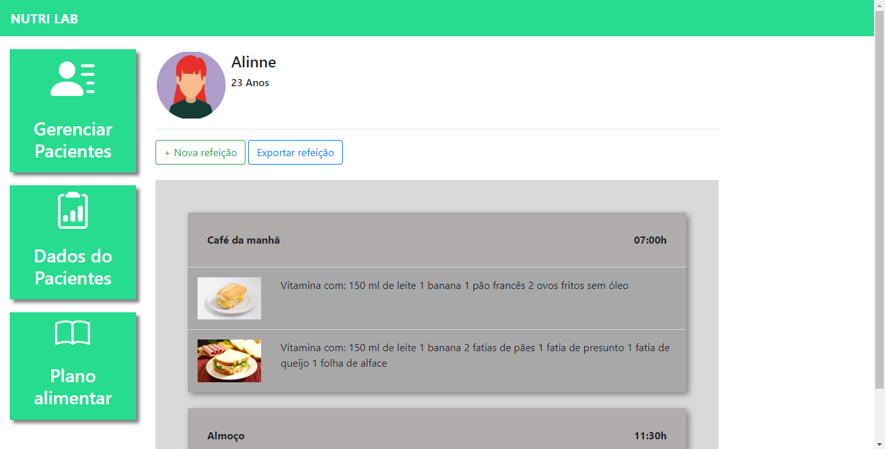
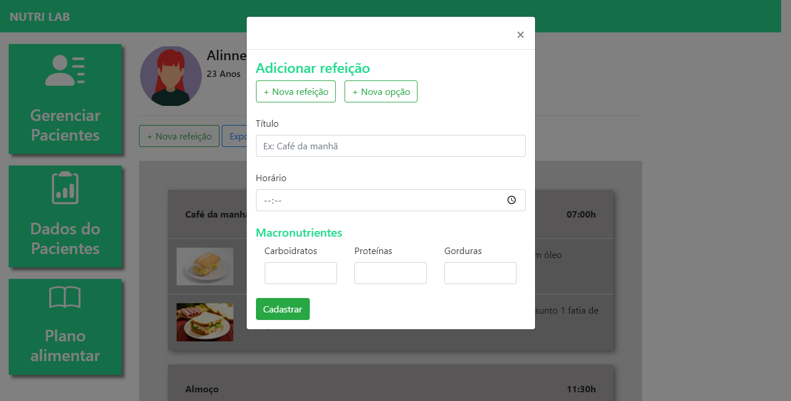
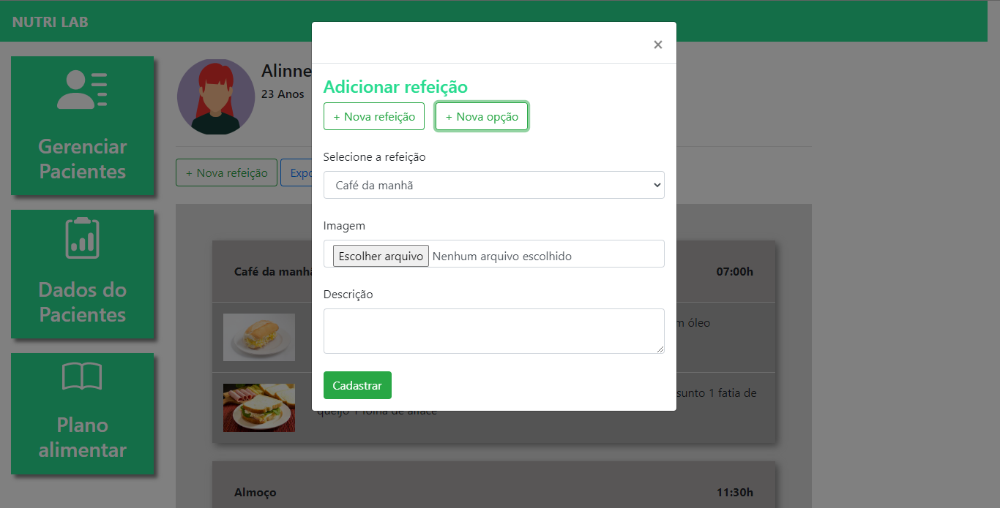

Clique aqui para ver o código do projeto no Github.
Readme
Este projeto em questão chama-se “Nutri Lab”, é um sistema online para nutricionistas onde esses profissionais podem realizar o cadastro de seus pacientes e fazer a gestão dos dados nutricionais desses pacientes como:
- Altura;
- Peso;
- Porcentagem de gordura corporal;
- Percentual Musculo;
- Colesterol HDL;
- Colesterol LDL;
- Colesterol total;
- Triglicerídeos.
Quando o nutricionista realiza o cadastro desses dados do paciente, é criado um gráfico de peso para o nutricionista ter uma melhor visão da evolução do paciente.
Os nutricionistas podem também fazer cadastro de refeições para cada paciente seguir sua dieta como indicado pelo nutricionista, chamamos isso de plano alimentar, no cadastro de refeições incluem:
- Horário;
- Quantidade de carboidratos;
- Quantidade de proteínas;
- Quantidade de gorduras.
Em cada refeição está vinculado algumas opções do que comer, essas opções são escolhidas pelo nutricionista para que cada paciente coma a opção que estiver a seu alcance ou qual ela gostar mais.
E por fim, assim que o nutricionista monta as refeições com as devidas opções de alimentos que podem ser consumidos pelo paciente, o nutricionista pode criar um PDF com as refeições e as opções de alimentos apenas clicando em um botão. Assim ele poderá mandar esse PDF para o paciente afim de que ele saiba o que comer e quando comer.
Tecnologias Usadas:
- Limguagem de marcação:
- HTML.
- Linguagem de estilização:
- CSS.
- Linguagem de programação:
- Python;
- JavaScript.
- Framework:
- Django.
Por que Django?
Django é um Framework muito amplo e completo. Ele tem seu próprio sistema de segurança contra os principais ataques de hacking da atualidade. O Django também tem uma fácil e rápida interação com o banco de dados e é possível fazer inúmeras aplicações apenas com Django. Além de ser muito usado por sua facilidade, o que deixa o trabalho dos desenvolvedores mais rápido além de proporcionar uma usabilidade excelente para o usuário final.
Tela de Cadastro
Nesta tela de cadastro é onde os nutricionistas podem realizar seu próprio cadastro para ter acesso ao sistema, sem o cadastro não é possível fazer o login e assim quem não fizer o cadastro não pode usar o sistema.
No momento em que alguém tenta fazer o cadastro é verificado: Se o usuário preencheu todos os campos; Se o Username já existe, não é possível ter dois usuários com o mesmo Username; Se o e-mail é um e-mail válido; Se a senha tem ao menos 8 dígitos e é uma senha forte; Se a senha digitada é a mesma digitada no campo “Confirmar senha”; E por fim, ao clicar no botão “Cadastrar” e todos os requisitos acima forem atendidos, é enviado um e-mail para o usuário com um link de autenticação para que o usuário mostre que é ele mesmo que está tentando realizar o cadastro. Após clicar no link o cadastro do usuário é realizado e logo ele será redirecionado para a tenha de login para que ele possa usar o sistema. Lembrando que para requisito não atendido, aparece uma mensagem de erro falando exatamente no que o usuário errou ao tentar realizar o cadastro.
Tela de Login
Após o usuário ser autenticado ele é direcionado para essa tela onde ele pode efetuar o login se os demais requisitos forem cumpridos: Se o Username existir no banco de dados; Se a senha digitada consistir com a senha do devido Username. Se todos estes requisitos forem cumpridos ele será redirecionado para a tenha inicial de pacientes.
Tela de Pacientes
Nesta tela o nutricionista pode gerenciar os pacientes que ele tem. Como excluir paciente ou cadastrar mais pacientes.
Tela de Cadastro de Pacientes
Nesta tela o nutricionista pode cadastrar os pacientes colocando as suas informações pessoais para registrar no banco de dados.
Tela para Gerenciar os Dados dos Pacientes
Tela dos Dados do Paciente
Após o nutricionista clicar em um dos pacientes da tela anterior, aparecerá esta tela onde o nutricionista pode ver a relação dos dados do paciente em questão e pode analizar sua evolução.
Tela de Cadastro dos Dados do Paciente
Nesta tela o nutricionista pode cadastrar os dados dos pacientes colocando as informações coletadas do paciente.
Tela para Gerenciar os Planos Alimentares dos Pacientes
Tela do Plano Alimentar do Paciente
Após o nutricionista clicar em um dos pacientes da tela anterior, aparecerá esta tela onde o nutricionista pode ver o plano alimentar do paciente.
Tela de Cadastro das Refeições do Paciente
Após o nutricionista clicar em "Nova refeição" na tela anterior, aparecerá esta tela onde o nutricionista pode realizar o cadastro de uma nova refeição.
Tela de Cadastro das Opções de Alimentos de cada Refeição
Após o nutricionista clicar em "Nova opção" na tela anterior, aparecerá esta tela onde o nutricionista pode realizar o cadastro de uma nova opção de comida para o paciente comer.